253,2 TRIỆU
lượt xem nội dung trên Facebook
Trong giai đoạn phụ trách Branding tại 1Office
PORTFOLIO · 2022–2026
NHÂN VIÊN TRUYỀN THÔNG
Công nghệ · AI · Chuyển đổi số
“Nếu công nghệ phức tạp, truyền thông phải làm nó trở nên dễ hiểu, dễ tiếp cận và hữu ích trong đời sống.”
Tôi làm truyền thông trong các doanh nghiệp công nghệ, từ viễn thông, nền tảng số đến B2B SaaS, AI và chuyển đổi số. Hiện phụ trách Branding tại 1Office.
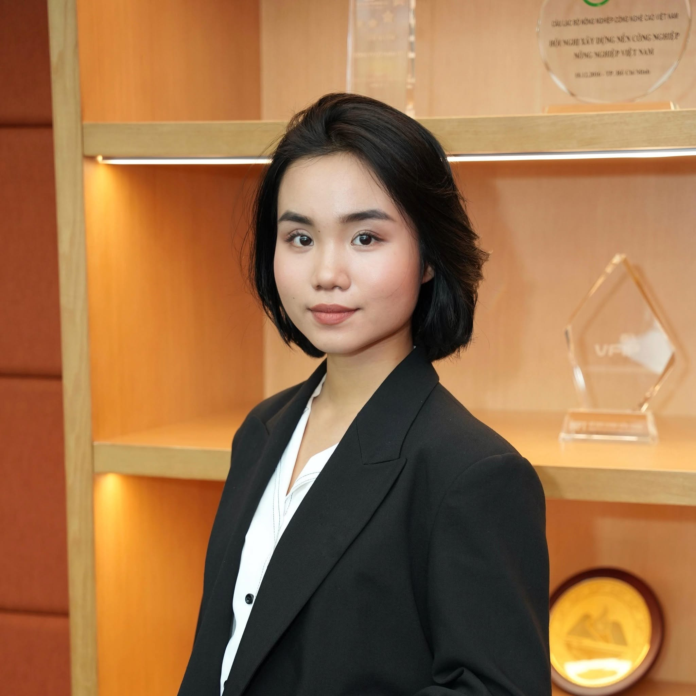
DẤU ẤN NỔI BẬT
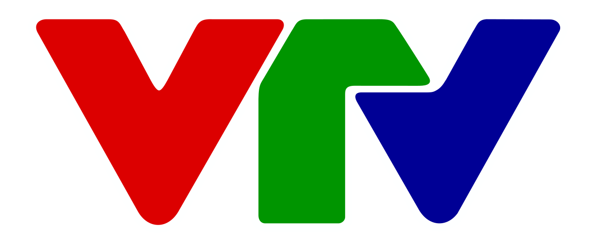
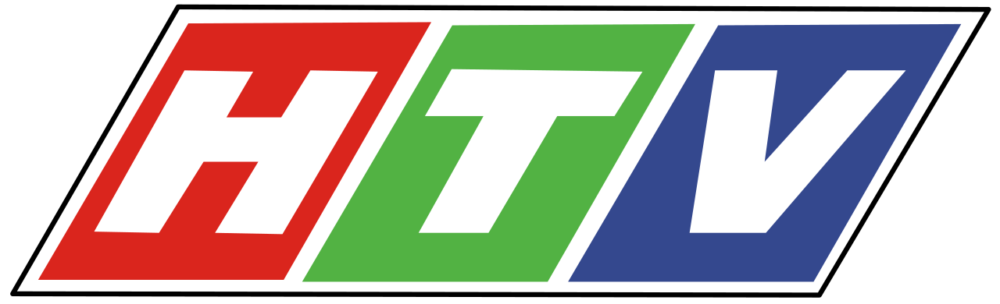
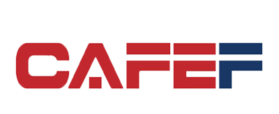
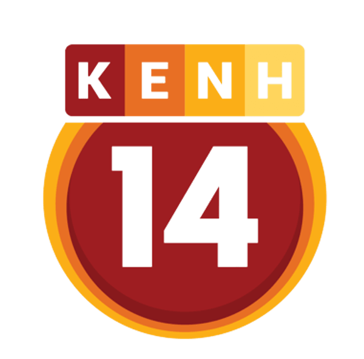
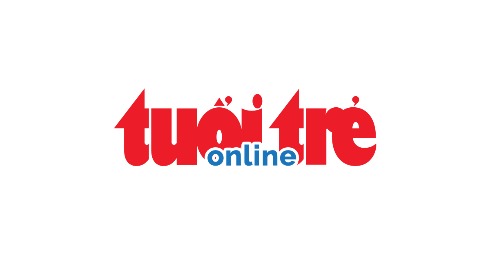
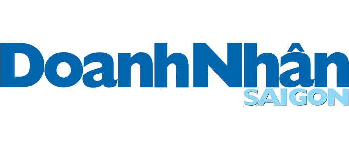
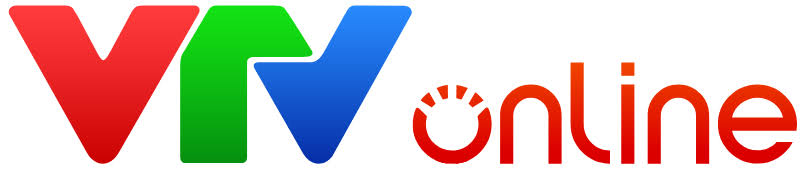
NĂNG LỰC CHUYÊN MÔN
Từ nghiên cứu và hoạch định đến phát triển nội dung, PR, truyền thông sự kiện, sản xuất và đo lường hiệu quả.
Nghiên cứu thị trường, khách hàng mục tiêu và đối thủ. Xác định mục tiêu, thông điệp, nhóm công chúng, kênh triển khai và kế hoạch truyền thông phù hợp với từng chương trình.
Xây định hướng nội dung cho thương hiệu và sản phẩm. Trực tiếp phát triển, biên tập và kiểm soát chất lượng nội dung trên Social, Website, PR, video và các tài sản truyền thông.
Phối hợp với biên tập viên, phóng viên, cơ quan báo chí, truyền hình và các đối tác truyền thông. Phát triển góc khai thác, nội dung PR và các hoạt động lan tỏa phù hợp với từng chiến dịch.
Xây ý tưởng, thông điệp, nội dung chương trình và kế hoạch truyền thông cho sự kiện. Phối hợp sản xuất key visual, video, hình ảnh, tài liệu truyền thông và các hoạt động trước, trong và sau chương trình.
Theo dõi hiệu quả nội dung, kênh truyền thông và hành trình người tham dự. Tổng hợp dữ liệu, xác định điểm cần cải thiện và chuyển kết quả triển khai thành đề xuất cho kế hoạch tiếp theo.
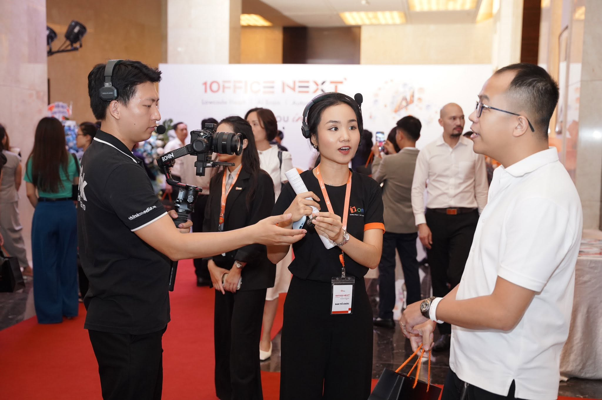
VAI TRÒ HIỆN TẠI
Hiện phụ trách định hướng Branding và Content tại 1Office, đồng thời quản lý đội ngũ 5 nhân sự. Công việc tập trung vào việc kết nối mục tiêu thương hiệu với sản phẩm, nội dung, PR, sự kiện và các hoạt động truyền thông hướng tới doanh nghiệp.
Nghiên cứu thị trường, khách hàng và bối cảnh cạnh tranh. Xây định hướng truyền thông, thông điệp và kế hoạch nội dung cho các chiến dịch trọng điểm.
Phân công công việc, xây brief, review và đảm bảo chất lượng nội dung, hình ảnh và các tài sản truyền thông trước khi triển khai.
Làm việc cùng Product, Sales, Performance, Design, Media và các đối tác bên ngoài để triển khai PR, Social, sự kiện, video và các chương trình truyền thông thương hiệu.
Theo dõi hiệu quả nội dung, kênh và các chương trình truyền thông. Tổng hợp dữ liệu, rút insight và điều chỉnh định hướng theo từng giai đoạn.
Từ trực tiếp triển khai nội dung đến định hướng, điều phối nguồn lực và chịu trách nhiệm về chất lượng truyền thông.
DỰ ÁN TIÊU BIỂU
Phụ trách xây dựng kế hoạch truyền thông, phát triển nội dung và điều phối triển khai trên các kênh Organic cùng hệ thống kênh lan tỏa trước, trong và sau sự kiện.
1Office Next 2025 là sự kiện ra mắt phiên bản mới của 1Office trong hành trình phát triển từ SaaS sang nền tảng vận hành doanh nghiệp ứng dụng AI và Automation.
Bài toán không chỉ là thu hút người tham dự mà còn cần làm rõ sự chuyển dịch của sản phẩm, tạo độ phủ truyền thông và củng cố vị thế 1Office trong nhóm doanh nghiệp quan tâm đến AI và chuyển đổi số.
Lập kế hoạch truyền thông
Xác định nhóm công chúng, thông điệp, các giai đoạn truyền thông và vai trò của từng kênh trong hành trình thu hút khách tham dự.
Triển khai các kênh Organic
Điều phối nội dung trên Social, Website và các điểm chạm Organic nhằm tạo nhận biết, dẫn traffic và thúc đẩy đăng ký tham gia sự kiện.
Mở rộng độ phủ qua PR và Media
Phối hợp teaser, PR, phỏng vấn lãnh đạo, thông cáo báo chí và truyền hình để mở rộng độ phủ cho sự kiện và câu chuyện chuyển đổi của 1Office.
Điều phối tài sản truyền thông
Phối hợp sản xuất hình ảnh, video và các tài sản truyền thông xuyên suốt chiến dịch.
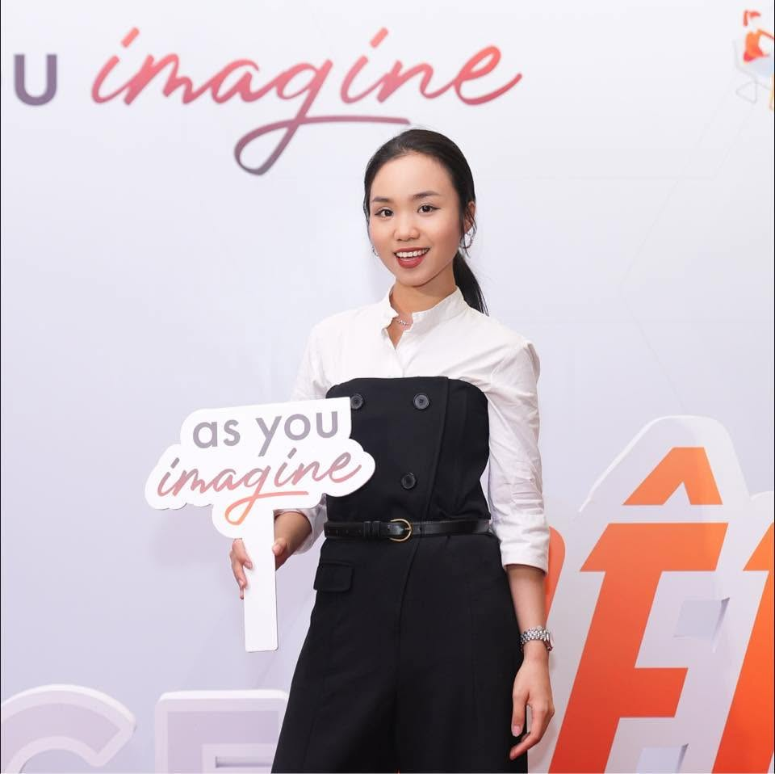
KẾT QUẢ
VIDEO PRODUCTION
Tham gia phát triển và sản xuất các nội dung video phục vụ những cột mốc thương hiệu và hoạt động ra mắt sản phẩm mới của 1Office.
Video được sản xuất cho Launching 1Office Next 2025, đồng thời là cột mốc kỷ niệm 10 năm thành lập 1Office.
Nội dung kết nối hai câu chuyện trong cùng một sản phẩm: hành trình 10 năm phát triển của thương hiệu và bước chuyển sang thế hệ sản phẩm mới với AI, Automation và No-code.
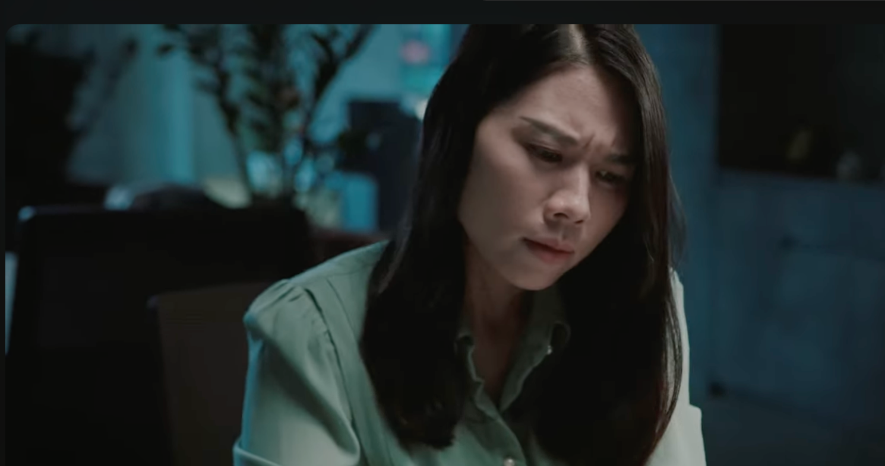
Xem TVC ↗Trong quá trình 1Office mở rộng từ nền tảng quản trị doanh nghiệp sang hệ sinh thái ứng dụng AI và No-code, chuỗi video được phát triển nhằm giới thiệu các AI Agent gắn với từng bài toán vận hành cụ thể trong doanh nghiệp.
WEBINAR B2B
Không chỉ thu hút nhiều người đăng ký, mà phải thu hút đúng người và giữ họ ở lại đủ lâu để nội dung tạo giá trị.
PR & MEDIA RELATIONS
Từ mục tiêu từng chiến dịch, xác định câu chuyện để phát triển thành PR, phỏng vấn lãnh đạo, thông cáo báo chí hoặc nội dung truyền hình.
Chuẩn bị thông tin, outline, biên tập và kiểm soát thông điệp trước khi xuất bản.
Làm việc với cơ quan báo chí, phóng viên, agency và đối tác để đảm bảo tiến độ, tài liệu, điều phối phỏng vấn và định hướng thương hiệu.
Đặt PR trong hành trình truyền thông chung từ nhận diện, ra mắt sản phẩm đến lan tỏa sau sự kiện.
đã có cơ hội phối hợp triển khai truyền thông trong quá trình làm việc
HÀNH TRÌNH PHÁT TRIỂN
Tham gia xây kế hoạch nội dung đa kênh, trực tiếp viết và biên tập nội dung, phối hợp truyền thông online và offline. Đồng thời bắt đầu làm việc với báo chí, KOC và các bên liên quan trong những chiến dịch thương hiệu.
Phụ trách nội dung trên Social, Zalo và ứng dụng Sendo Farm. Tham gia các hoạt động KOC, livestream, sản xuất media, activation và sự kiện nhằm mở rộng nhận diện và tạo thêm điểm chạm với người dùng.
Phụ trách định hướng Branding và Content cho doanh nghiệp B2B công nghệ, đồng thời mở rộng sang PR, truyền thông sản phẩm AI, sự kiện, phối hợp đa phòng ban và quản lý đội ngũ 5 nhân sự.
KINH NGHIỆM TÍCH LŨY
Tham gia xây lại định hướng nội dung cho fanpage Sendo Farm Hà Nội, triển khai nội dung trên Facebook, Zalo, TikTok và ứng dụng. Đồng thời phối hợp KOC, Media, livestream và các hoạt động sự kiện để tăng nhận diện và tương tác với người dùng.
Tham gia lập kế hoạch truyền thông trên Facebook, TikTok và Zalo, trực tiếp phát triển nội dung và phối hợp cùng các phòng ban cho các hoạt động thương hiệu. Đồng thời làm việc với báo chí và KOC trong các chiến dịch truyền thông.
GÓC NHÌN VỀ RAR CENTER
RAR Center đang sở hữu hệ sinh thái giải pháp trải rộng từ định danh và xác thực điện tử đến các ứng dụng trong:
Đi cùng với đó là nhiều nhóm công chúng có nhu cầu rất khác nhau:
Khi hệ sinh thái tiếp tục mở rộng, bài toán truyền thông cần trả lời đúng:
MỘT SỐ HƯỚNG TÔI NHÌN THẤY
Xác định các nhóm người dân, doanh nghiệp, đối tác, ngành nghề và cộng đồng công nghệ để tổ chức thông tin phù hợp với nhu cầu của từng nhóm.
Website, Facebook, TikTok, các kênh cấp C06 và hệ sinh thái đối tác không nhất thiết phải kể cùng một câu chuyện theo cùng một cách.
Bắt đầu từ tình huống người dùng gặp trong đời sống hoặc vận hành, sau đó mới giải thích công nghệ phía sau.
“Bay cùng VNeID” và “Chu Du” là một ví dụ đáng chú ý cho hướng tiếp cận này.
Khi số lượng giải pháp ngày càng lớn, việc tổ chức các tuyến nội dung, series và điểm truy cập thông tin rõ ràng có thể giúp công chúng hiểu hệ sinh thái RAR Center nhanh hơn.